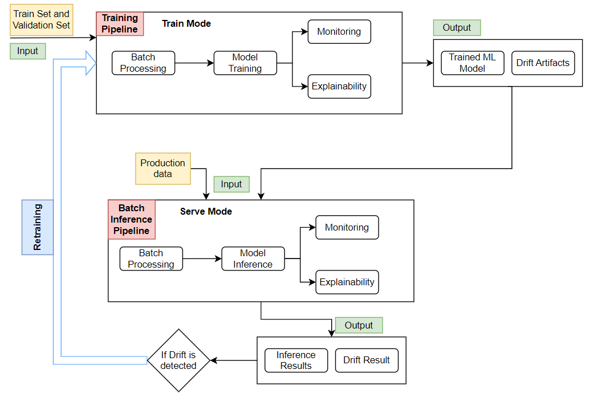
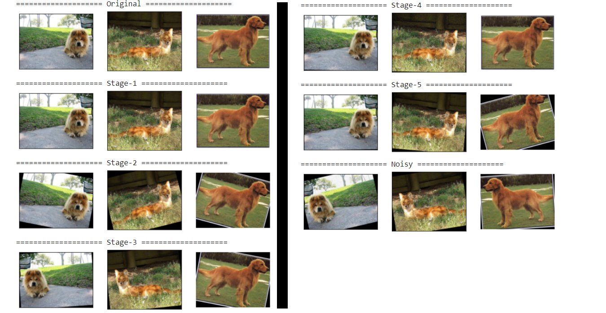

End-to-End MLOPS on AWS: Part2 - Computer Vision Simulation with Drift & Retraining #
| Authors: Palash Nimodia , Yogendra Yatnalkar |
| Last Edited: 02/05/2023 |
| Previous Blog Link: End-to-End MLOps on AWS: Part1 - Introduction |
In our previous blog, we explored the concept of MLOps and its core elements which are components and pipelines. In this second part of our series, we will demonstrate how we created a comprehensive simulation for computer-vision batch workloads and later present the results of the same. Some of the key features of our simulation include drift monitoring, model retraining on drift and model redeployment.
Use-case details: #
-
The goal is to create an MLOps system for Image Classification at a large scale. We will focus on batch-inference workloads only, which are tasks that involve processing large batches of images using machine learning models. The MLOps system is based on AWS cloud services, but we will discuss them in more detail in future blog posts. The goal of this second part of our blog series is to give you an overview of the MLOps system, show you how we conducted the simulation and present the simulation results.
-
The Image Classification MLOps system has four components and two pipelines. The four components are:
- Processing Component: To batch process the images
- Algorithm Component: To train a CNN model and perform batch-inference using the same.
- Monitoring Component: To learn training image dataset distribution and detect drift on production images.
- Explainability Component: Explainable insight generation on the input images using the trained ML model.
The two pipelines are:
- Training Pipeline: The train pipeline encapsulates all the components listed above and runs them in the “Train” mode.
- Batch-Inference Pipeline: The batch-inference pipeline encapsulates all the components listed above and runs them in the “Serve” mode.
Note: For more details on Train and Serve mode, please refer to the previous blog.
The upcoming blogs will discuss regarding components and pipelines in detail (stay tuned)
|  |
|---|
| Overview of the entire MLOps system |
Simulation and its goal: #
-
The end-goal of the simulation is to test the robustness of the MLOps system discussed above. As a part of this simulation, we ran this system on 7 different datasets in a sequential manner. The 7 datasets include 1 original dataset and 6 variants of the same set with varying levels of drift.
-
The simulation was performed with complete automation and helped us answer the following questions:
- Does the system detect drift when it should ?
- If it does, does it trigger the retraining pipeline and train on the new data?
- How does drift affect model performance and can retraining fix it?
Dataset and its variations: #
-
The dataset used for the simulation was a sample of “Dog Breed Identification” dataset taken from Kaggle (original data link ).
-
The sample dataset includes 6 classes out of 120 classes from the original dataset. The 6 classes are: boston_bull, chow, collie, dhole, doberman, golden_retriever.
-
The sample dataset was divided into train-set, validation-set and test-set where the strength of each class being:
- Train-set: 408 image, Validation-set: 34 images, Test-set: 42 images
-
The original sample set is further augmented with 6 varying levels of drift. Hence, in total there are 7 variations of the same set which are:
| Dataset | Augmentation Form |
|---|---|
| Original | Original Set, No augmentation |
| Stage-1 | Random flip |
| Stage-2 | Random rotate |
| Stage-3 | Random rotate + Random flip |
| Stage-4 | Random blur + Very small random rotate |
| Stage-5 | Random blur + Random rotate |
| Noisy | High-degree random blur + High-degree random rotate + Random flip |
- The 7 variation sample dataset can be found on kaggle: Kaggle-Link
- The augmentation code link: Github-Link
Dataset Visualization: #
Please Note: Since the display image is small, the random noise will not be easily visible to human eyes in the below plot

Simulation Execution and Result: #
With all the components, pipelines and data variants, we are ready to start the simulation execution. Without getting into the specifics of the AWS implementation, let’s take a look at how we completed the whole simulation:
-
We maintained a key-value pair database (DB) which will store the output location of every pipeline run. We used AWS Parameter Store as our key-value store (DB).
-
On the first run, the training pipeline was run once on the original set and the DB was updated.
-
Next, the Batch-Inference pipeline was hosted to run on a schedule. The schedule was set to 1 hour (example: 12:05, 13:05, ….etc). On AWS, this was done using AWS Event Bridge Scheduler.
-
At each scheduled trigger, the input to the inference pipeline was changed in a cyclical manner starting from the original test set. The input test-set cycle was as follows:
Original Set → Stage-1 → Stage-2 → Stage-3 → Stage-4 → Stage-5 → Stage-Noisy → (Cycle complete) Original- Hence, till the cycle completes, after every run, a slightly higher drift set will be passed as input to the inference pipeline.
- An important rule that we followed was: the training pipeline would use the same stage of training and validation set as the test set that caused drift.
- For example, if the stage-3 test set triggered the training pipeline, then the input will be set to the stage-3 training and validation. This means that the training pipeline would always run on the latest data available for each test set.
Time TEST-SET TRAIN SET VALIDATION SET 11.05 Original Original Original 12.05 Stage-1 Stage-1 Stage1 13.05 Stage-2 Stage-2 Stage-2 14.05 Stage-3 Stage-3 Stage-3 15.05 Stage-4 Stage-4 Stage-4
-
For the input visualization, please refer to the above table. From there, we can clearly see that at every hour the test set path is changing and if drift gets detected at any point, the same hours training and validation set will be passed as input.
-
After running the training pipeline once and setting up the inference pipeline to run on an hourly schedule as discussed above, we ran the simulation and its results are as follows:
Time Input Test Path Drift Artifacts Trained on set KS Drift Detection result (Retrain) 12.05 Stage-1 Original FALSE 13.05 Stage-2 Original FALSE 14.05 Stage 3 Original TRUE15.05 Stage 4 Stage 3 Train False 16.05 Stage 5 Stage 3 Train TRUE17.05 Noisy Test Stage 5 Train FALSE 18.05 Original Stage 5 Train FALSE -
From the above results table, we can see that the “Time” column tells us at what time the batch-inference pipeline was triggered. The “Input Test Path” shows the test dataset inputted at each time interval.
-
The column “Drift Artifacts Trained On Set” shows us which training run was used to create the monitoring artifacts. We previously mentioned that we ran the Train pipeline once before the simulation using the Original train and validation set. Therefore, we can see that at 12.05, even though the inference pipeline takes stage-1 as the input test path, the monitoring artifacts are based on the original set.
-
One important observationis, at any point when the drift was detected i.e at 14.05 and 16.05, the training pipeline was re-run with the latest train and validation set (i.e stage-3 set at 14.05 and stage-5 set at 16.05). Hence, at 15.05, when the inference pipeline was running on stage-4 test-set, the monitoring artifacts were trained on stage-3 train-set. -
We ran the pipeline for 10+ hours, recorded all the results and concluded the simulation process. We can say that, we were successful in building a system which actively detected drift and tackled it with proper retraining strategy.
-
After completing the simulation, we were left with only 1 question, do we actually need retraining to tackle drift ?
Need for retraining ? #
-
The inference pipeline only received the test-set as input and not its ground-truth labels, hence we could not verify whether our model performance had really deteriorated on the subsequent drift sets or not.
-
Since this was a simulation of production and not actual production, we had access to the ground-truth labels for all the test-sets. We conducted a small experiment, where we trained multiple CNN models on one of the sets and measured the test-set accuracy and loss across all variations of the drifted test-sets.
-
The simulation result shows that drift occurred on the stage-3 set when the ML model and monitoring artifacts were trained on the original set. Therefore, we need to compare the performance of our model trained on the original set and stage-3 set with all the other sets.
| ML Model Trained on set | Metric | Original Test Set | Stage-1 Test Set | Stage-2 Test Set | Stage-3 Test Set | Stage-4 Test Set | Stage-5 Test Set | Noisy Test Set |
|---|---|---|---|---|---|---|---|---|
| Original | Accuracy | 97 | 97 | 97 | 92.8 |
95 | 92.8 | 95 |
| Loss | 0.17 | 0.17 | 0.19 | 0.13 |
0.33 | 0.25 | 0.27 | |
| Sage-3 | Accuracy | 100 | 100 | 100 | 100 | 97 | 100 | 100 |
| Loss | 0.01 | 0.0001 | 0.004 | 0.001 | 0.1 | 0.005 | 0.02 |
-
The training results table above and the simulation result table from before show a clear correlation between drift detection and model accuracy degradation.When artifacts were trained on the original set and drift was detected on the stage-3 set, the model accuracy dropped by about 4% (from stage-2 test set to stage-3 test set). -
However, after retraining the model on the stage-3 train set and testing it on the stage-4 train set, the model accuracy did not fall below a certain threshold. This suggests that retraining is an effective way to deal with drift.
The END #
Conclusion: This is the first post in our Computer Vision domain specific series, where we briefly explained our Image Classification MLOps system. We also covered the various datasets we used, the simulation method and the simulation result. Finally, we found out that retraining is an effective way to deal with drift.
Please provide us your valuable feedback and stay tuned. The upcoming blogs will be released soon.